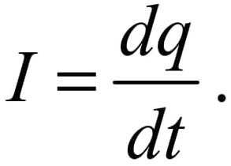
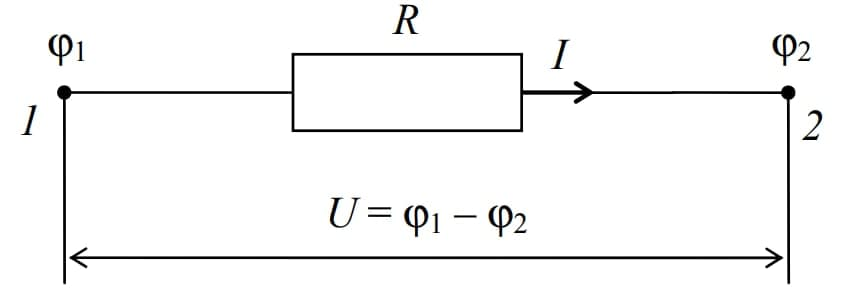
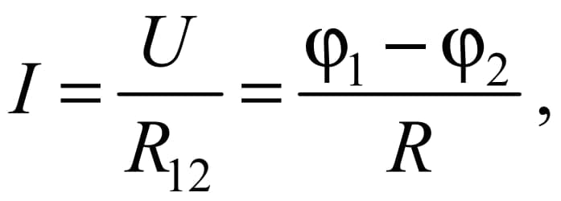
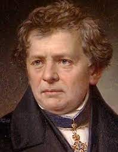
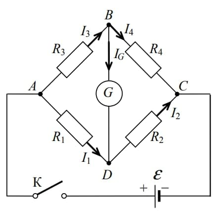

Электрическим током называется любое упорядоченное движение электрических зарядов.
В проводнике под действием приложенного электрического поля свободные электрические
заряды перемещаются: положительные – по полю, отрицательные – против поля,
т. е. в проводнике возникает электрический ток, называемый током проводимости.
Количественной характеристикой электрического тока является сила тока I – физическая величина,
численно равная электрическому заряду, прошедшему через поперечное сечение проводника в единицу
времени:

Если сила тока в течение времени не изменяется, то такой электрический ток называется постоянным.

Участок электрической цепи, не содержащий источников тока, называется однородным.
Для такого участка выполняется закон Ома для однородного участка цепи:

где (ϕ1 − ϕ2) – разность потенциалов на концах участка 1–2 цепи; R – сопротивление участка цепи.
Георг Ом

- немецкий физик, экспериментально открыл этот закон: Сила тока I в проводнике прямо пропорциональна напряжению U на его концах и обратно пропорциональна электрическому
сопротивлению R проводника (участка).
Мост Уитстона
состоит из четырех резисторов, соединенных в замкнутый четырехугольный контур
, каждая сторона которого называется плечом моста. В одну (измерительную)
диагональ такого контура включается гальванометр G, а в другую − источник постоянного
тока с электродвижущей силой. При произвольных значениях сопротивлений R1 , R2 , R3 , R4
в этих резисторах будут протекать токи силой I1 , I2 ,I3 , I4 соответственно.
И в измерительной диагонали гальванометр G покажет некоторую силу тока IG .Такой мост
называется неуравновешенным. Однако сопротивления плеч моста можно подобрать так,
чтобы ток в цепи гальванометра отсутствовал (IG = 0). Такой мост называется уравновешенным.
Условие IG = 0 достигается при определенном соотношении между сопротивлениями плеч моста
